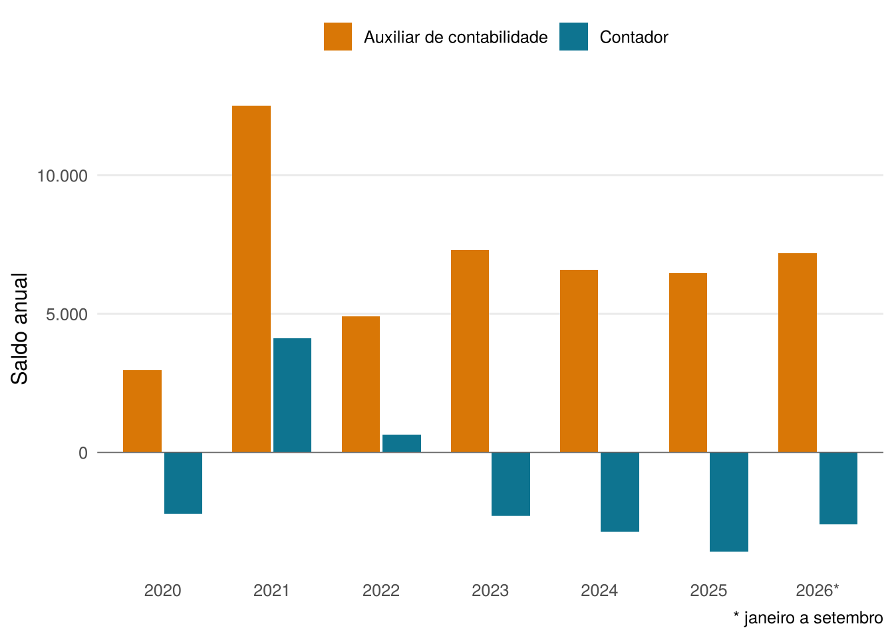
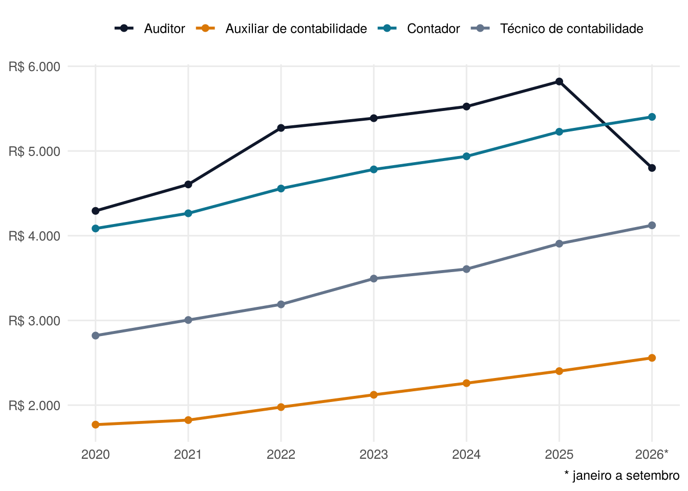

![]()
| Ocupação | Admissões 2025 | Admissões 2026 | Saldo 2025 | Saldo 2026 | Salário 2025 | Salário 2026 |
|---|---|---|---|---|---|---|
| Contador | 29.558 | 31.778 | -1.978 | -2.598 | 5.147 | 5.403 |
| Auditor | 3.880 | 5.476 | -422 | -707 | 5.786 | 4.800 |
| Perito contábil | 113 | 103 | 15 | -10 | 4.786 | 4.264 |
| Técnico de contabilidade | 1.515 | 1.583 | -282 | -159 | 3.852 | 4.123 |
| Auxiliar de contabilidade | 67.381 | 71.496 | 7.240 | 7.178 | 2.380 | 2.558 |
O mercado de trabalho contábil costuma ser discutido a partir de impressões, seja a percepção de escassez de profissionais nos escritórios, seja a expectativa de que a automação reduza a demanda por funções operacionais. Nesse sentido, os microdados do Novo Cadastro Geral de Empregados e Desempregados (CAGED) permitem verificar essas percepções com base nos registros de admissões e desligamentos de trabalhadores com carteira assinada. Este texto apresenta os principais números de janeiro a setembro de 2026 para cinco ocupações da Classificação Brasileira de Ocupações (CBO): contador (252210), auditor (252205), perito contábil (252215), técnico de contabilidade (351105) e auxiliar de contabilidade (413110).
Admissões e saldo em 2026
Conforme a Tabela 1, as admissões cresceram em todas as ocupações, exceto a de perito contábil, na comparação com o mesmo período de 2025. Destaca-se o caso dos contadores, com 31.778 admissões (aumento de 7,5%), e o dos auxiliares de contabilidade, que concentram o maior volume de contratações (71.496 admissões, alta de 6,1%).
Fonte: elaborado pelo autor com dados do Novo CAGED/MTE (2026). Nota: salário médio de admissão, em reais, de vínculos não intermitentes com remuneração entre R$ 500 e R$ 60.000, em valores nominais.
No entanto, o saldo (admissões menos desligamentos) revela trajetórias distintas. Enquanto os auxiliares de contabilidade mantêm saldo positivo (7.178 vínculos no período), os contadores registram saldo negativo (-2.598), resultado que se repete desde 2023, conforme a Figura 1. Em outras palavras, as empresas contratam contadores com frequência crescente, mas os desligamentos crescem ainda mais rapidamente.

Fonte: elaborado pelo autor com dados do Novo CAGED/MTE (2026).
Esse resultado deve ser interpretado com cautela. O CAGED registra apenas vínculos celetistas, de modo que o saldo negativo pode ser explicado, ao menos em parte, pela migração de contadores para a atuação como sócios de escritórios, profissionais autônomos ou prestadores de serviço por meio de pessoa jurídica, situações que não aparecem no cadastro. Além disso, o saldo positivo dos auxiliares sugere que parte das rotinas operacionais continua sendo absorvida por vínculos formais de menor remuneração, o que não corrobora, ao menos por ora, a expectativa de substituição dessas funções pela automação.
Salário de admissão
Quanto à remuneração, o salário médio de admissão dos contadores alcançou R$ 5.403 em 2026, valor 5,0% superior ao do mesmo período de 2025. Entre 2020 e 2025, considerando os anos completos, o salário de admissão da ocupação passou de R$ 4.085 para R$ 5.227, crescimento nominal de 28,0% (Figura 2). Ressalta-se que os valores não foram deflacionados, de modo que parte desse aumento reflete a inflação do período.

Fonte: elaborado pelo autor com dados do Novo CAGED/MTE (2026). Nota: o perito contábil foi omitido em virtude do número reduzido de admissões (cerca de uma centena entre janeiro e setembro de cada ano).
Por outro lado, o salário de admissão dos auditores recuou 17,0% em 2026, de R$ 5.786 para R$ 4.800, ao mesmo tempo em que as admissões da ocupação cresceram 41,1%. A coincidência dos dois movimentos sugere uma mudança na composição das contratações, com maior peso de posições iniciais, e não necessariamente uma redução da remuneração para cargos equivalentes.
Diferenças regionais
No Nordeste, o salário médio de admissão dos contadores foi de R$ 3.896 em 2026, o equivalente a 72,1% da média nacional, e no Rio Grande do Norte, de R$ 3.714 (68,7% da média nacional). Ainda assim, o número de admissões de contadores no Nordeste cresceu 11,7% em relação a 2025, ritmo superior ao observado no país. Os recortes regionais e mensais, atualizados a cada divulgação do Ministério do Trabalho e Emprego (MTE), podem ser consultados nos indicadores do mercado de trabalho contábil.
Considerações
Em suma, os dados de 2026 indicam um mercado contábil com contratações em alta e salários de admissão em crescimento nominal, mas com saldo negativo persistente entre os contadores com carteira assinada. Isto posto, estudos que combinem o CAGED com a Relação Anual de Informações Sociais (RAIS) e com dados de sócios de empresas podem esclarecer em que medida esse saldo reflete a saída da profissão ou apenas a mudança na forma de inserção no mercado de trabalho.
Citação
Por favor, cite este trabalho como:
PRADO, Alexsandro. O mercado de trabalho contábil em
2026. Blog de Alexsandro Prado, 16 nov. 2026.
Disponível em: <https://alexsandroprado.site/blog/posts/mercado-contabil-2026/>